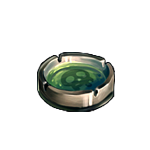
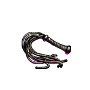
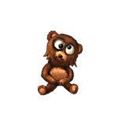
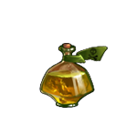
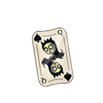

Получено: файл; исходный URL. Иллюстрация в отдельной статье ViveR_9 «Плохая коллекция»; исходный файл без перекодирования. Авторство отдельно не установлено. Страница: источник.

Плохая коллекция
Браузерная социальная версия; историческая статья; дата редакции неизвестна- Тип
- Коллекции
- Версия и дата
- Браузерная социальная версия; историческая статья; дата редакции неизвестна
Элементы коллекции















Данные по источнику · Браузерная социальная версия · историческая статья; дата редакции неизвестна
Предварительно: один материал, требуется сверка. Требуется сверка.
- Состав (источник Zombie-island)
- Пепельница; Плеть; Бедомишка; Бутыль яда; Пиковая Дама.
- Награда (источник Zombie-island)
- 500 Опыт; 1 Бревна пальмы.
- Плохую коллекцию можно найти в ценностях и сокровищах Зомби Фермы
- Шкатулка; Череп; Бутылка; Мистический; Северный бриллиант; Подарок фиолетовый с черепом; Новогодняя елка; Хэллоуинский маяк; Новогодняя елка за дубл; Новогодняя елка за зб; Алтарь; Тыква Джэка.
- Плохую коллекцию можно привезти с пиратских островов
- Пиратский сундук; Остров Сокровищ.
- Плохая коллекция попадается при колдовании Палочками дома
- Палочка-выручалочка.
Данные по источнику · браузерная версия; платформа в ответе не уточнена · Дата на странице (формат не уточнён): 21/04/2015
Предварительно: Ответ справочного сайта; достоверность и независимость от других фанатских источников не установлены. Возможны различия редакций и версии.. Требуется сверка.
- Ответ источника
- В состав Плохой коллекции Зомби фермы входит 5 элементов: карта Пиковая дама, бутылочка с ядом, плетка, пепельница и плюшевый Бедомишка. Эти предметы можно найти на о. Скровищ. Проверяйте все бутылки, шкатулки, черепки. Некоторые элементы могут выпадать в яйцах – Хрупкое, Стальное, Малахитовое. Кроме этого, предметы могут быть спрятаны в секретных кладах. Например, Северный изумруд, тыква Джека, Праздничная корзина, подарок от администрации игры, мистический сюрприз и т.п. В итоге Плохую коллекцию можно обменять на приятный сюрприз – 500 баллов опыта и 1 ед. пальмовых бревен. Наличие данной коллекции влияет на прохождение таких квестов, как Странный Сильвер и Условия победы.
Данные по источнику · браузерная версия; платформа не указана · дата редакции не установлена
Предварительно: Содержимое списка: изображения и колонки могут терять смысл при извлечении текста; отдельная страница и дата не проверены. Подписи alt иногда ошибочны.. Требуется сверка.
- Текст карточки из каталога
- 500 опыта и бревна пальмы Пепельница Плеть Бедомишка Бутыль яда Пиковая Дама Где хорошо копается Плохая коллекция: На Пиратских островах
Данные по источнику · Браузерная версия ВКонтакте; редакция не установлена · 05.10.2018 — дата публикации; дата последующей редакции неизвестна
Предварительно: Фанатская статья: вероятность находки не указана; независимость от других справочников не установлена.. Требуется сверка.
- Состав
- Пепельница; Плеть; Бедомишка; Бутыль яда; Пиковая Дама.
- Обмен
- 1 Брёвна пальмы и 500 опыта.
- Получение
- Задание «Ссора» и ценности, включая Подарок, Мистический, Бочонок, Открытый ларец, Бутылка, Шкатулка, Северный бриллиант, Северный изумруд и Череп.
- Палочками
- Октавий и Пончик-победитель.
- Применение
- В строительстве Кареты; также названы различные задания и события без количества.
Связанные сущности
нет проверенных связей — требуется сверка.